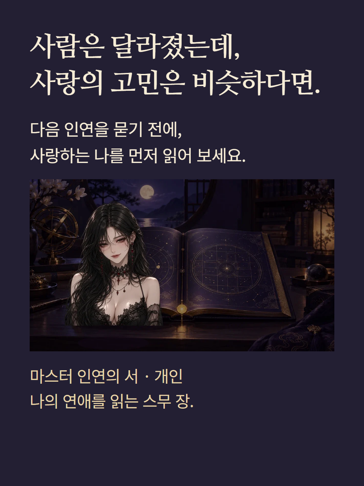
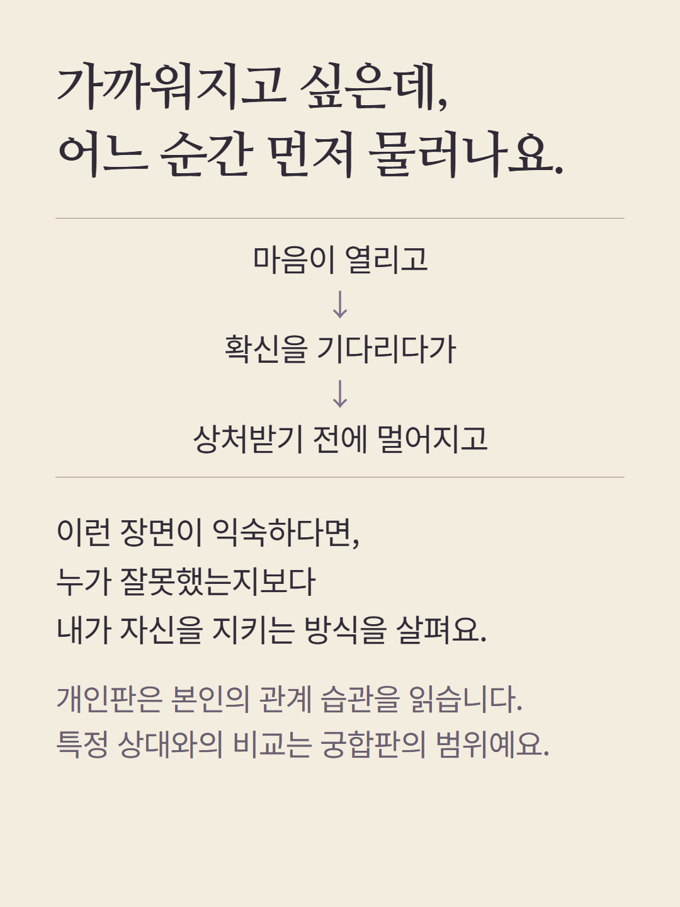
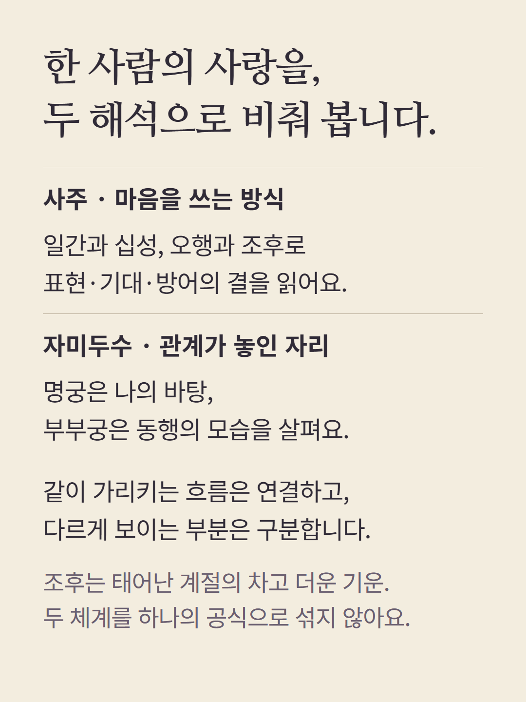
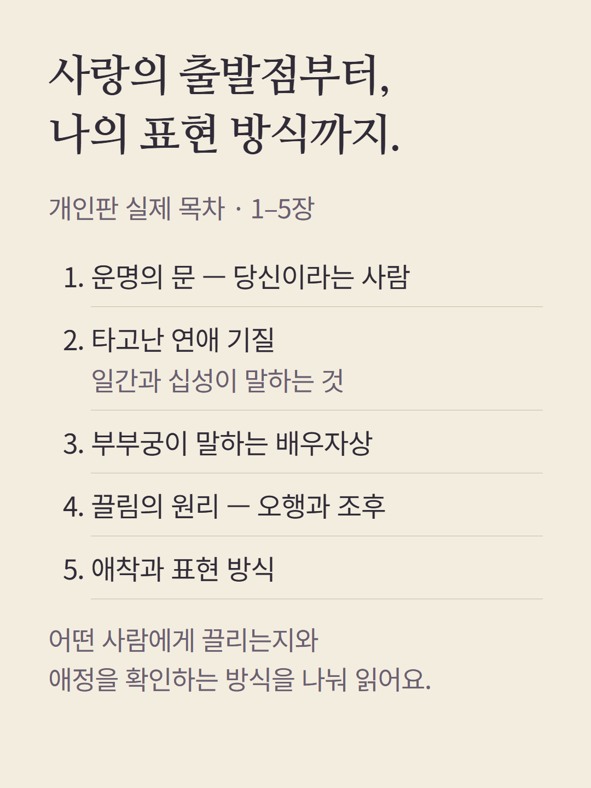
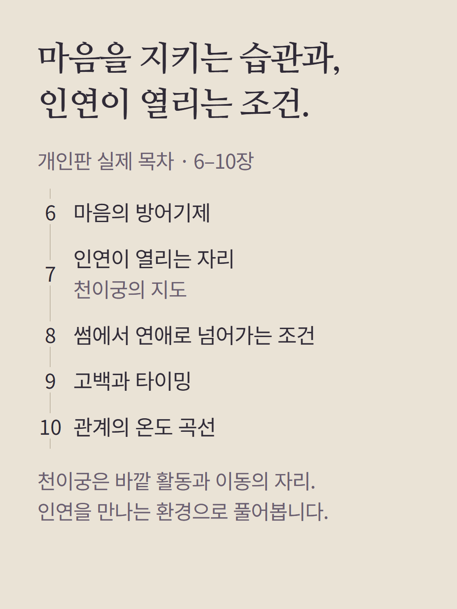
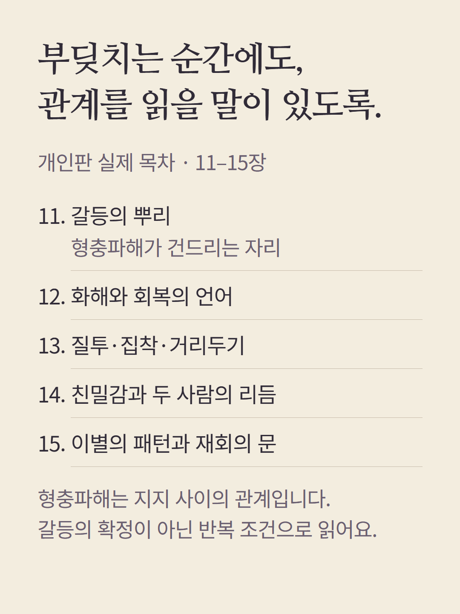
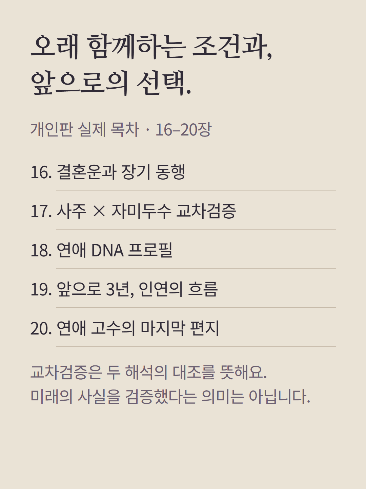
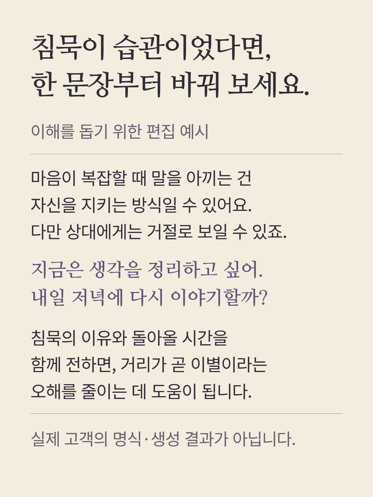
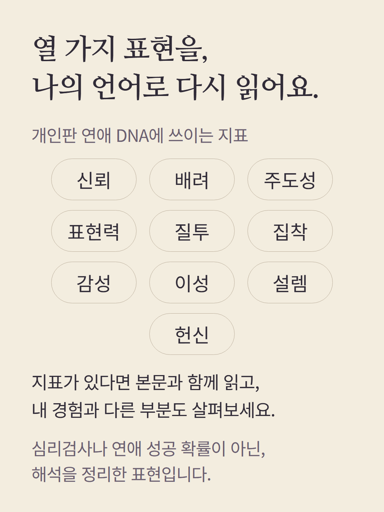
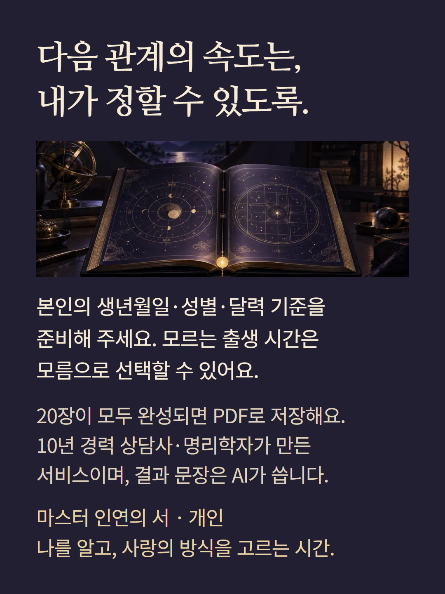

로컬 편집 원본 미리보기 · 실제 서비스 모바일 검수는 같은 폴더의 actual/notice/cta 파일 참고










개인판은 본인의 사주와 자미두수 명반을 읽는 별도 상품입니다. 예시 문장은 이해를 위한 편집 예시이며 실제 고객 결과가 아닙니다. DNA 지표는 해석을 정리한 표현으로 심리검사 점수나 성공 확률이 아닙니다. AI 해설이며 사람이 결과마다 직접 집필·감수하는 상담이 아닙니다. 도서 이미지는 디지털 리포트 삽화이며 실물 배송 상품이 아닙니다.